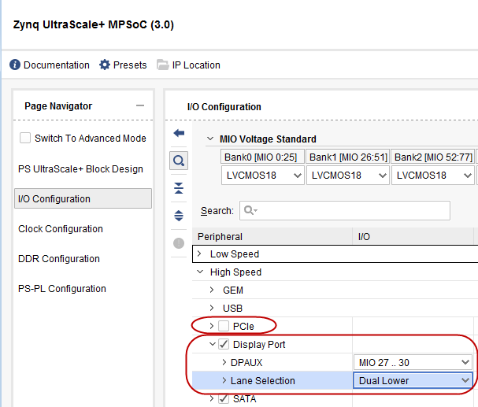
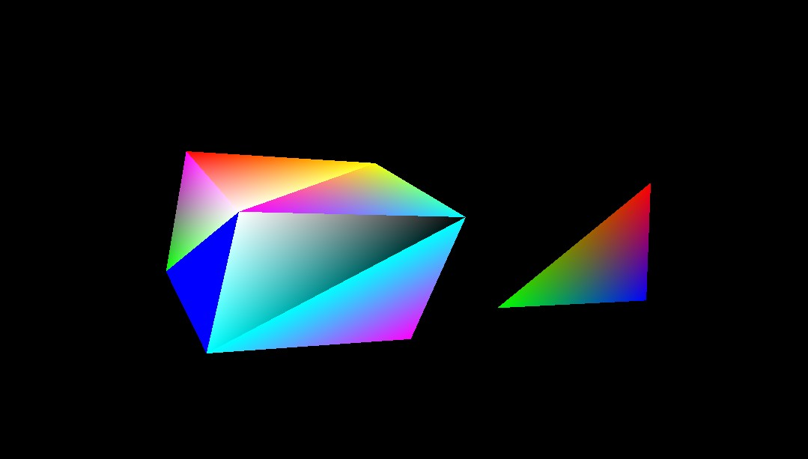

Design Example: Example Setup for a Graphics and DisplayPort Based Sub-System¶
This design example is primarily based on the graphics processing unit and the DisplayPort on a Zynq® UltraScale+™ MPSoC device. The main idea behind this example is to demonstrate the configurations, packages, and tool flow required for running designs based on GPU and DP on a Zynq UltraScale+ MPSoC device. This design example can be broken down into the following steps:
Configuring the hardware.
Configuring PetaLinux RootFS to include the required packages:
GPU-related packages
X Window System and dependencies
Building boot and Linux images using PetaLinux.
Building a graphics OpenGL ES application targeted for Mali GPU. This application is based on the X Window System.
Loading Linux on the ZCU102 board and running the graphics application on the target to see the result on the DisplayPort.
Configuring the Hardware¶
In this section, you will configure the processing system to set dual lower GT lanes for the DisplayPort. The hardware configuration in this section is based on the same Vivado project that you created in Design Example 1: Using GPIOs, Timers, and Interrupts.
Configuring Hardware in Vivado IP Integrator¶
Ensure that the edt_zcu102 project and the block design are open in Vivado.
Double-click the Zynq UltraScale+ processing system block in the Block Diagram window and wait till the Re-customize IP page opens.
In the Re-customize IP window, click I/O Configuration → High Speed.
Deselect PCIe peripheral connection.
Expand DisplayPort and set Lane Selection to Dual Lower, as shown in following figure:

Note: The DisplayPort lane selection is set to Dual Lane to support UHD@30 resolution in the design example of this tutorial. This configuration locks the display for UHD@30 as well as lower resolutions such as 1080p60 for corresponding monitors.
Click OK to close the Re-customize IP wizard.
CAUTION! Do not click the Run Block Automation link. Clicking the link resets the design as per board preset and disables the design updates you made using in this section.*
Click File → Save Block Design to save the block design. Alternatively, press Ctrl+S to save the block design.
Click Generate Bitstream, re-synthesize the design and generate the bitstream.
After the bitstream is generated successfully, export the hardware platform using the Vivado export hardware platform wizard as shown in Exporting Hardware Platform.
Copy the XSA file to a Linux host machine.
The next section describes how to build Linux for your hardware configuration and also add additional software packages for GPU and the X Window System.
Modifying the Configuration and Building Linux Images Using PetaLinux¶
Reconfigure the PetaLinux BSP in sync with the new hardware changes. This section uses the PetaLinux project you created in Example Project: Create Linux Images using PetaLinux.
Change to the PetaLinux directory using the following command:
$ cd xilinx-zcu102-2020.1Copy the hardware platform
edt_zcu102_wrapper.xsain the Linux host machine.Reconfigure the BSP using the following command:
$ petalinux-config --get-hw-description=<path containingedt_zcu102_wrapper.xsa>/The PetaLinux configuration wizard opens.
Save and exit the wizard without any additional configuration settings. Wait until PetaLinux reconfigures the project.
Clean the existing bootloader image. This is to ensure that the bootloader is recreated in sync with new hardware design.
$ petalinux-build -c bootloader -x distclean
Building the Mali OpenGLES Application¶
This section leads you through building a triangle-based cube
application. This application is written in OpenGLES and is based on
the X Window System. For more details and for the application source
code, refer to tricube in the design_files folder of the zip file that
accompanies this tutorial. See Design Files for This Tutorial.
Use the following steps to build the OpenGLES application:
Copy the entire
tricubeapplication source directory to the Linux host machine in therecipe-appsdirectory of the PetaLinux project.<PetaLinux-Project>/project-spec/meta-user/recipes-apps/tricubeAdd the newly created
tricubetouser-rootfsconfig, which is located in<plnx_project>/project-spec/meta-user/conf/user-rootfsconfig.With this addition, the file will appear as shown below:
CONFIG_gpio-demo CONFIG_peekpoke CONFIG_tricube
Refer to recipe
tricube/tricube.bbfor detailed instructions and libraries used for building this application. The X Window System (X11) packages included while building the above application are application dependent. Libraries included intricube.bbrecipe are based on the packages that were used in the application.
Enable GPU Libraries and Other Packages in RootFS¶
In this section, you will use the PetaLinux RootFS configuration wizard to add the Mali GPU libraries. PetaLinux is shipped with Mali GPU libraries and device drivers for the Mali GPU. By default, the Mali driver is enabled in the kernel tree, but Mali user libraries need to be configured (on an as-needed basis) in the root file system. In addition to this, you will use the same wizard to include the X Window System libraries.
Open the PetaLinux RootFS Configuration wizard:
$ petalinux-config -c rootfsNavigate to and enable the following packages:
Filesystem Packages ---> libs ---> libmali-xlnx ---> libmali-xlnx Filesystem Packages ---> libs ---> libmali-xlnx ---> libmali-xlnx-dev
These packages enable you to build and run OpenGLES applications targeted for Mali GPU in the Zynq UltraScale+ MPSoC device.
Add the X11 package groups to add X Window related packages:
Petalinux Package Groups > packagegroup-petalinux-x11 >packagegrouppetalinux- x11 Petalinux Package Groups > packagegroup-petalinux-x11 > packagegroup-petalinux-x11-dev
Add the OpenGLES application created in the earlier section:
User Packages \-\--\ \[\*\]tricubeAfter enabling all the packages, save the config file and exit the RootFS configuration settings.
Build the Linux images using the following command:
$ petalinux-buildNote: If the PetaLinux build fails, use the following commands to build again:
Verify that the
image.ubLinux image file is generated in theimages/linuxdirectory.Generate the boot image for this design example as follows:
$ petalinux-package --boot --fsbl images/linux/zynqmp_fsbl.elf --pmufw images/linux/pmufw.elf --atf images/linux/bl31.elf --fpga images/linux/system.bit --u-boot images/linux/u-boot.elf
A BOOT.BIN Boot image is created. It is composed of the FSBL boot
loader, the PL bitstream, PMU firmware, ATF, and U-Boot.
IMPORTANT!: This example uses GPU packages based on the X Window System, which is the default setting in PetaLinux 2019.2. To enable Frame Buffer fbdev based GPU packages in PetaLinux 2019.2, add the following line in
/project-spec/meta-user/conf/petalinuxbsp.conf:DISTRO_FEATURES_remove_zynqmp = “ x11”
See the example eglfbdev application (based on fdev) available in the Design Files for This Tutorial. For more information, see Xilinx Answer Record 68821.
Loading Linux and Running the OpenGLES Application on the Target and Viewing the Result on the DisplayPort¶
Preparing the SD Card¶
Now that the Linux images and the application are both built, copy the BOOT.BIN and image.ub images to an SD card and load the SD card in the ZCU102 board/
Running the Application on a Linux Target¶
Setting Up the Target¶
Load the SD card into the J100 connector of the ZCU102 board.
Connect the micro USB cable to micro USB port J83 on ZCU102 board. Connect the other end to an open USB port on the host machine. Also, make sure that the JTAG cable is disconnected. If the JTAG cable is connected, the system might hang.
Connect a DisplayPort monitor to the ZCU102 board. The DisplayPort cable from the DP monitor can be connected to the DisplayPort connector on the ZCU102 board.
Note: These images were tested on a UHD@30 Hz and FullHD@60 Hz DisplayPort capable monitor.
Configure the board to boot in SD boot mode by setting switch SW6 as shown in the following figure.

Connect 12V power to the ZCU102 6-Pin Molex connector.
Start a terminal session, using Tera Term or Minicom depending on the host machine being used, as well as the COM port and baud rate for your system.
For port settings, verify the COM port in the device manager.
There are four USB-UART interfaces exposed by the ZCU102 board. Select the COM port associated with the interface with the lowest number. In this case, for UART-0, select the COM port with interface-0.
Powering On the Target and Running the Applications¶
Turn on the ZCU102 board using SW1, and wait until Linux loads on the board.
After Linux loads, log in to the target Linux console using
rootfor the login and password.Set the display parameters and start
Xorgwith the correct depth.# export DISPLAY=:0.0 # /usr/bin/Xorg -depth 16&
Run the
tricubeapplication.# tricubeAt this point, you can see a rotating multi-colored cube and a rotating triangle on the display port. Notice that the cube is also made of multi-colored triangles.

© Copyright 2017-2021 Xilinx, Inc.
Licensed under the Apache License, Version 2.0 (the “License”); you may not use this file except in compliance with the License. You may obtain a copy of the License at
http://www.apache.org/licenses/LICENSE-2.0
Unless required by applicable law or agreed to in writing, software distributed under the License is distributed on an “AS IS” BASIS, WITHOUT WARRANTIES OR CONDITIONS OF ANY KIND, either express or implied. See the License for the specific language governing permissions and limitations under the License.